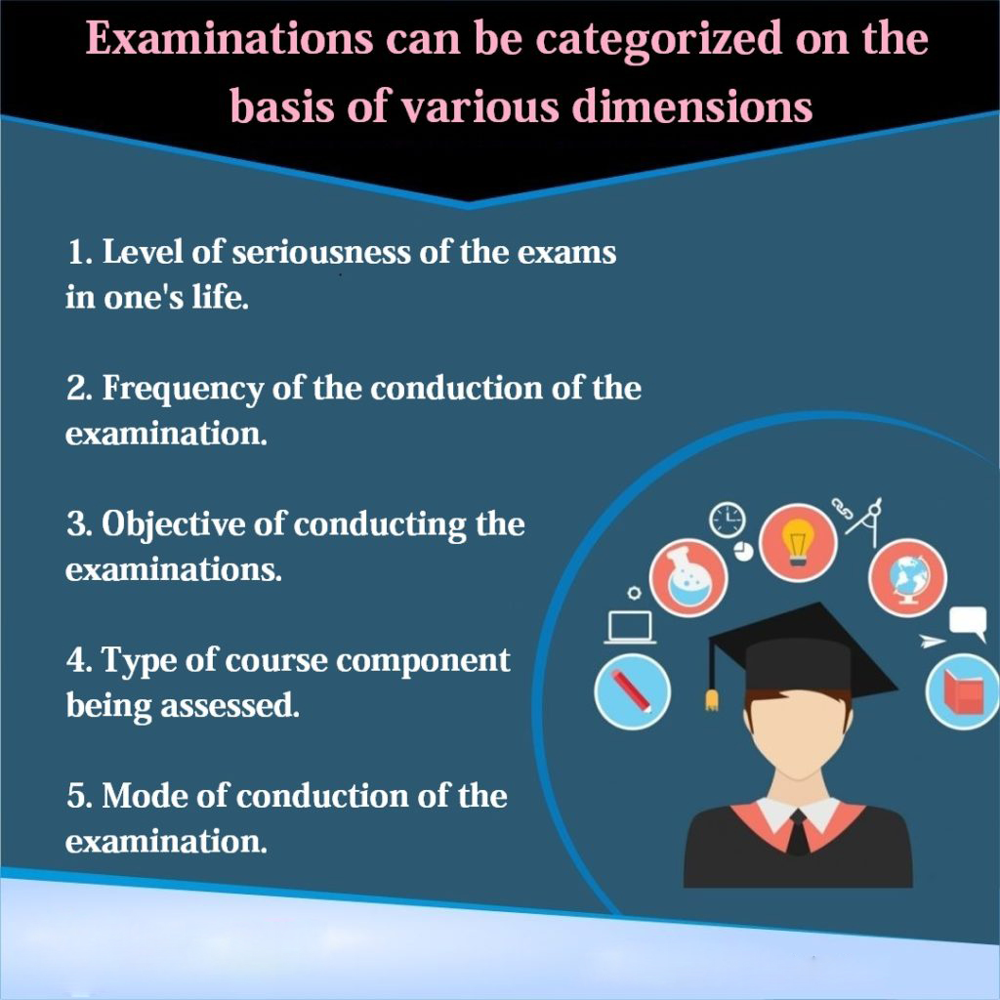

Examination System
Examinations are a formal assessment process, where candidates can showcase their knowledge and proficiency in a given subject or topic. They are administered with varying purposes and at varying frequencies by an assessment or recruitment body.
Examinations are a formal assessment process, where candidates can showcase their knowledge and proficiency in a given subject or topic.
They are administered with varying purposes and at varying frequencies by an assessment or recruitment body.
Examinations can be categorized on the basis of various dimensions. Some of these dimensions are:
1. Level of seriousness of the exams in one’s life
a. High Stake Examinations: These types of examinations have very high impact on one’s lives or are high stake. Examples of such examinations in our country are the 10th board exams, 12th board exams, and university level examination, that could be a semester examination or annual examinations.
b. Medium Stake Examinations: These types of examinations are of medium impact on our lives or are medium stake. Example of such examinations are Science Olympiad or the National Talent Search Examinations or Scholarship Examinations etc.
c. Low Stake Examinations: These types of examinations are of low impact on our lives or are of low stakes. Example of such examinations are practices tests, mock tests and class tests etc.
2. Frequency of the conduction of the examination.
a. Semester Examinations: It follows a semester wise pattern, where universities conduct the final assessment on the basis of internal assessment which is conducted by various types of colleges via class test, sessional performance and practical exams and, an external assessment conducted by universities. These are conducted at the end of each semester.
b. Annual Examinations: These examinations are conducted by a university annually to assess the performance of the students at the end of the year. It is based on a combination of internal assessment [done by colleges], practical assessment [done by colleges] and external assessment [done by the University directly].
3. Objective of conducting the examinations
a. Summative Examinations: The goal of a summative exam is to evaluate the student learning at the end of the session and that exam could be an end semester exam or annual exam. Basically, it is a mid-term level of the exams.
b. Preparatory Examinations: The aim of the preparatory exam is kind of pre-university exam, who are scheduled to write the preparatory examination before the final examination, that will have set up for the revision as they will be getting the final level of examination.
c. Supplementary Examinations: This examination is conducted by universities and provide the second chance to the students who are not clear the main examination.
4. Type of course component being assessed
a. Theory Examinations: This type of exams includes theoretical exams for the various subjects which shall be conducted by universities, schools, and colleges.
b. Practical Examinations: This type of exam component includes a practical exam, which conducts after the theory examinations. The candidate shall be given the practical exams either in the college/Schools or any specific place which is allotted to the candidate.
c. Sessional Examinations: This type of examination shall be conducted by colleges as a matter of continuous assessment of performance of students. Example by means of class tests / quizzes etc.
5. Mode of conduction of the Examination
a. Pen and Paper based: These types of examinations are conducted physically where in students take the exam using pen and paper. Most University examinations are subjective / open ended tests and hence are conducted using this mode.
b. Computer Based: These types of examinations are conducted using a computer / tablet of mobile device. Questions are usually served from an online database and candidates maybe taking the test from their homes or from a physical designated centre.
Examination systems are modern web enabled applications like SmartExam or UCanAssess which can help in managing university examinations or online examinations successfully. They have been used by Universities like Banaras Hindu University, University of Mysore and Tezpur University over many years.